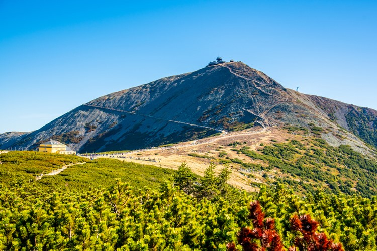
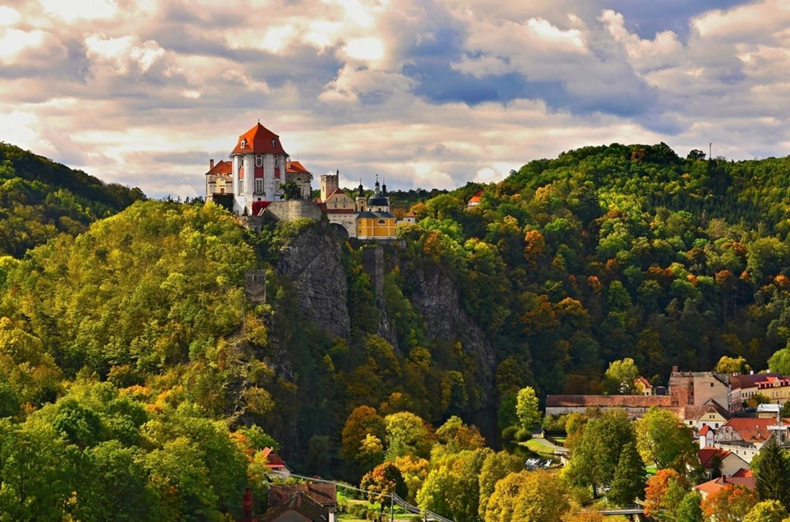
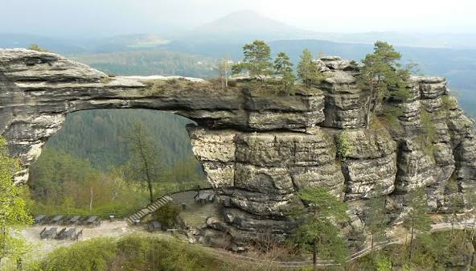

Four National Parks
Discover four unique landscapes protected for their natural beauty and wildlife.

Krkonoše National Park
Home to the highest mountains in Czechia, Krkonoše offers mountain meadows, waterfalls, forests and unique alpine landscapes.
Highlight: Sněžka, the highest mountain in Czechia.
Discover more →
Šumava National Park
Known for its vast forests, peaceful lakes, peat bogs and quiet mountain landscapes, Šumava is one of the largest natural areas in Czechia.
Highlight: Glacial lakes and ancient forests.
Discover more →
Podyjí National Park
This beautiful park follows the winding Dyje River through deep valleys, forests and rocky viewpoints in southern Moravia.
Highlight: The scenic Dyje River valley.
Discover more →
Bohemian Switzerland National Park
Famous for its dramatic sandstone cliffs, rock formations, deep gorges and remarkable natural scenery.
Highlight: Pravčická Gate, a famous natural landmark.
Discover more →